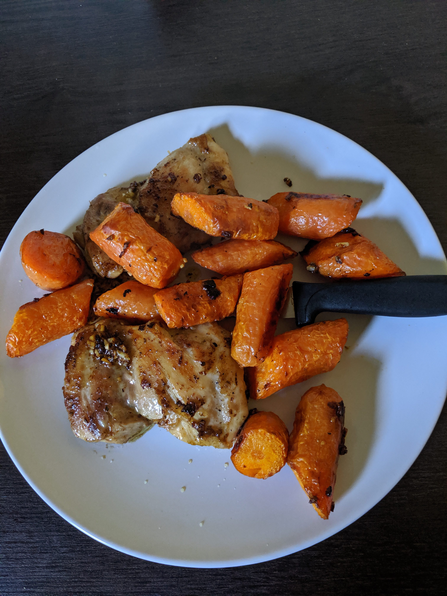

Garlic Chicken Thighs

Description
Boneless skinless chicken thighs are easy to find in the supermarket and a healthy option. This meal has minimal prep other than mincing garlic and goes with many other dishes, pictured here with some roasted carrots. You can have a meal ready within 20 minutes.
Ingredients
- Boneless skinless chicken thigh, 200-300g
- Salt
- Pepper
- Garlic powder
- 2 garlic cloves, minced
- 10g butter, unsalted
- ½ cup chicken stock, sub with water
- Olive oil
Steps
- Season chicken thighs on all sides with salt and pepper and generous amount of garlic powder.
- Heat pan on medium and add olive oil.
- Add chicken thighs to pan flat side down, press lightly for first few seconds where possible.
- After 5-10 minutes, when golden brown, flip chicken pieces.
- Cook for another 5 minutes.
- Add butter to pan and then garlic. Cook for 1 minute until garlic is golden.
- Add chicken stock to pan and turn heat up to high. Scrape up any brown bits stuck on pan.
- After 1-2 minutes, serve chicken with 1 tablespoon of sauce poured over.
Home